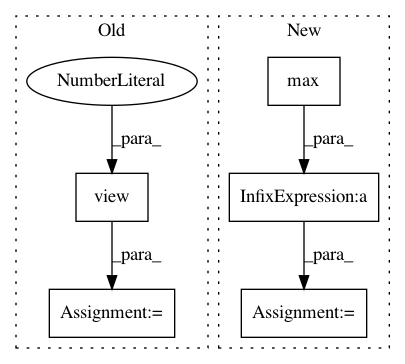

d8a075668b6e9cdf4c08f6c7285e5c7d2fbf5332,torch_geometric/graph/geometry.py,,edges_from_faces,#Any#,38
Before Change
// Sort the adjacencies row-wise.
edges = edges.t()
sorted, indices = torch.sort(edges[0], 0)
edges = torch.cat((sorted, edges[1][indices])).view(2, -1)
return edges
After Change
def edges_from_faces(faces):
// Get directed edges.
edges = torch.cat((faces[:, 0:2], faces[:, 1:3], faces[:, 0:3:2]))
n = faces.max() + 1
// Build directed adjacency matrix.
adj = torch.sparse.FloatTensor(edges.t(),
torch.ones(edges.size(0)),
In pattern: SUPERPATTERN
Frequency: 3
Non-data size: 5
Instances
Project Name: rusty1s/pytorch_geometric
Commit Name: d8a075668b6e9cdf4c08f6c7285e5c7d2fbf5332
Time: 2017-10-17
Author: matthias.fey@tu-dortmund.de
File Name: torch_geometric/graph/geometry.py
Class Name:
Method Name: edges_from_faces
Project Name: rusty1s/pytorch_geometric
Commit Name: 3b66ade462ac29a13daf707dc08222da7d303e69
Time: 2018-12-15
Author: matthias.fey@tu-dortmund.de
File Name: torch_geometric/nn/glob/set2set.py
Class Name: Set2Set
Method Name: forward
Project Name: asappresearch/sru
Commit Name: faf3aa876462323f2fa721ebd633752d6489808f
Time: 2020-09-18
Author: taolei@csail.mit.edu
File Name: sru/modules.py
Class Name: SRU
Method Name: forward